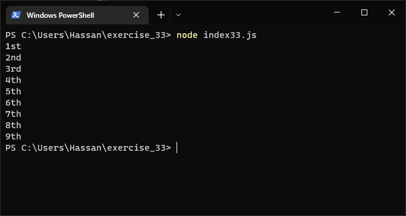
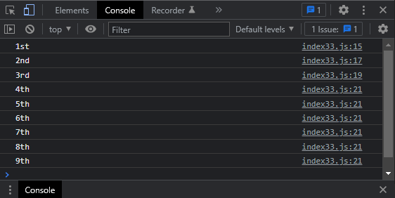

Exercise 33 (Ordinal Numbers)
Problem Statement
- Ordinal Numbers:
-
Ordinal numbers indicate their position in a array, such as 1st or
2nd. Most ordinal numbers end in th, except 1, 2, and 3.
- Store the numbers 1 through 9 in a array.
- Loop through the array.
-
Use an if-else chain inside the loop to print the proper
ordinal ending for each number.
-
Your output should read "1st 2nd 3rd 4th 5th 6th 7th 8th 9th",
and each result should be on a separate line.
Solution
JS Code:
Terminal Output:

Console Output:
